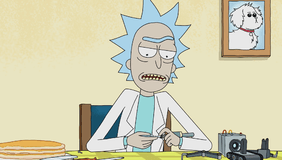

|  | 理查德·“里克”·桑切斯（由贾斯汀·罗兰（Justin Roiland [1] [2]表示））是一个社交病，虚无，脾气暴躁，粗鲁，粗鲁， 自恋，自以为是，酗酒的 疯狂科学家，是贝丝·史密斯的父亲和贝加·史密斯的外祖父。莫蒂和夏天。根据第3季，他大约70岁。他的酗酒倾向使他的女儿的家人担心儿子莫蒂的安全。一个非常聪明的人物，认为他的时间很宝贵，[3]他贬低了许多普通人类习俗（例如学校，婚姻甚至恋爱）的用处，尽管在整个系列中他对孙子和女儿都表现出了真挚的感情。他对莫蒂和其他家庭成员提出的平凡要求的反应表明，他认为自己完全优于他们，尽管在整个系列中有几次他表现出孤独的一面。他说话时经常在句子中间“打bur”，大概是由于他的酗酒。他被确定为Earth Dimension C-137的Rick Sanchez。在《婚礼狂徒“，里克与Squanchy和Birdperson一起被发现是反对银河联盟的自由战士，他们用逮捕令将恐怖分子标记在他们身上。为了保证家人的安全，里克给了一个提示，指出可以在哪里找到他。他投降银河联邦和他们的监狱之一嵌顿在“ 的Rickshank Rickdemption“据透露，里克实际上是为了破坏联邦的经济而自首；当里克斯委员会干涉时，里克还趁机取缔了里克斯委员会。里克还精心策划了“送”杰里为他较早的尝试是说服家庭将他变成联邦监护人，并使里克成为家庭的事实上的族长，但是里克试图驱走杰里的努力未成功，导致家庭角色减少。灵感主要来自“ 回到未来”的艾米特•布朗（Emmett Brown）。 |